Limit of a variable
If a variable  takes on successively a series of values
that approach nearer and nearer to a constant value 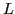
in such a manner that 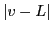 becomes and remains
less than any assigned arbitrarily small positive quantity,
then is said to approach the limit , or to converge
to the limit . Symbolically this is written
takes on successively a series of values
that approach nearer and nearer to a constant value 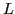
in such a manner that 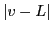 becomes and remains
less than any assigned arbitrarily small positive quantity,
then is said to approach the limit , or to converge
to the limit . Symbolically this is written
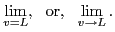
The following familiar examples illustrate what is meant:
- As the number of sides of a regular inscribed polygon is
indefinitely increased, the limit of the area of the polygon
is the area of the circle. In this case the variable is always
less than its limit.
- Similarly, the limit of the area of the circumscribed polygon
is also the area of the circle, but now the variable is
always greater than its limit.
- Consider the series
The sum of any even number 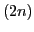 of the first terms of this series is
by item 6, Ch. 1, §1.1.
Similarly, the sum of any odd number 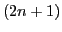 of the first terms of
the series is
again by item 6, Ch. 1, §1.1.
Writing (3.2) and (3.3) in the forms
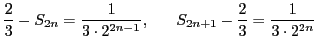
we have
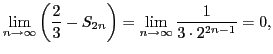
and
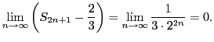
Hence, by definition of the limit of a variable, it is seen
that both 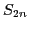 and
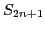 are variables approaching
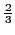 as a limit as the number of terms increases without limit.
Summing up the first two, three, four, etc., terms of (3.1),
the sums are found by ((3.2) and ((3.3) to
be alternately less and greater than
, illustrating
the case when the variable, in this case the sum of the terms
of ((3.1), is alternately less and greater than its limit.
In the examples shown the variable never reaches its limit.
This is not by any means always the case, for from the definition
of the limit of a variable it is clear that the essence of the
definition is simply that the numerical value of the difference
between the variable and its limit shall ultimately become and
remain less than any positive number we may choose, however small.
Example 3.1.1
As an example illustrating the fact that the variable may
reach its limit, consider the following. Let a series of regular
polygons be inscribed in a circle, the number of sides increasing
indefinitely. Choosing anyone of these, construct. the circumscribed
polygon whose sides touch the circle at the vertices of the inscribed
polygon. Let 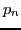 and 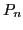 be the perimeters of the inscribed and
circumscribed polygons of  sides, and
sides, and  the circumference
of the circle, and suppose the values of a variable
the circumference
of the circle, and suppose the values of a variable  to be as follows:
to be as follows:
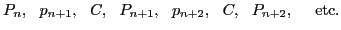
Then, evidently,
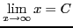
and the limit is reached by the variable, every third value of the
variable being .
david joyner
2008-08-11